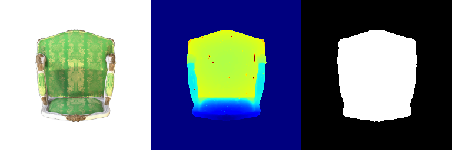
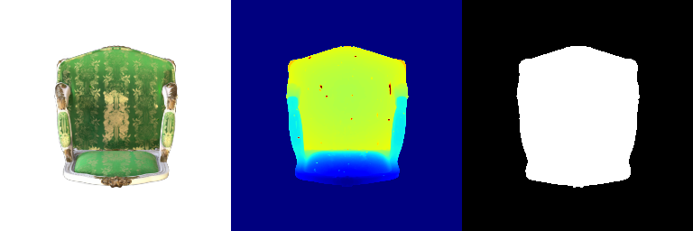
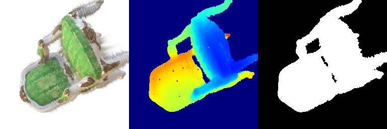
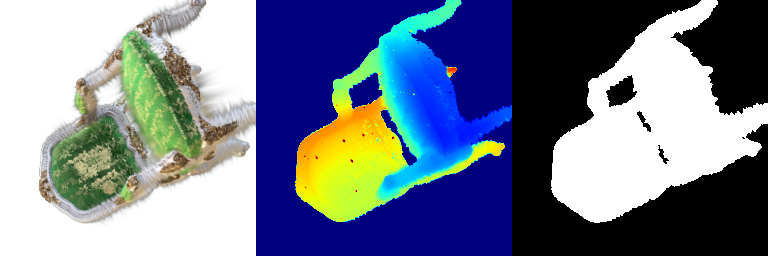
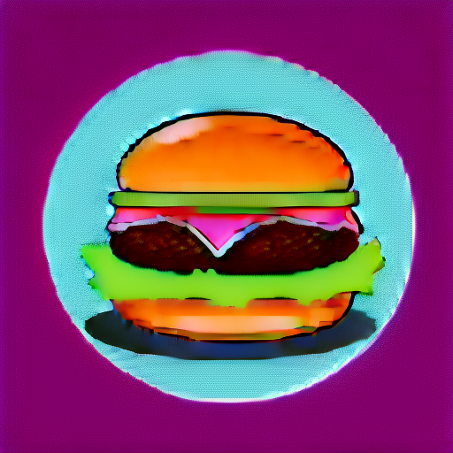
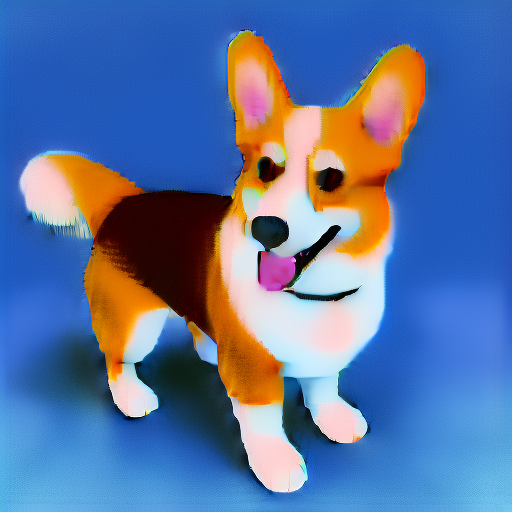
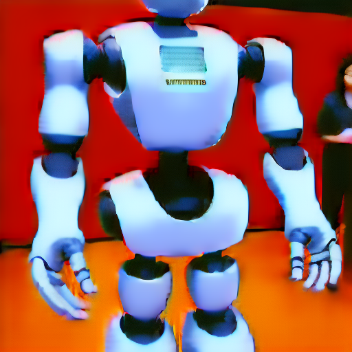
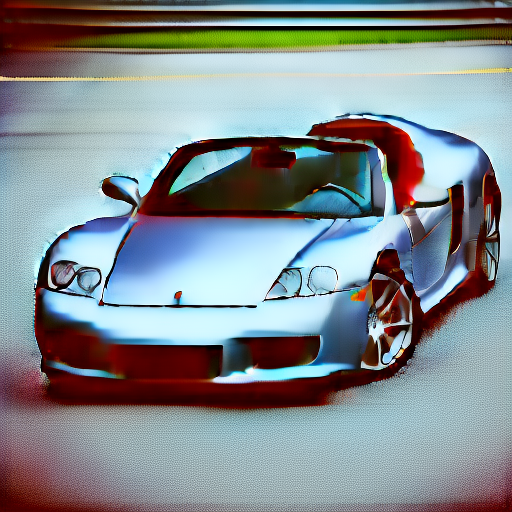

Here is the rendered result:
The learning rates I used for the parameters are the following:
I trained this for 1000 iterations.
The resulting mean PSNR is 28.195, and the mean SSIM score is 0.922.
Here is the training progress of the splats visualized:
Here is the rendered final result after training:
Rendered with spherical harmonics:
Rendered without spherical harmonics (From q1.1.5 above):
Taking some specific frames, we can see how view dependance affects the rendering process:
| View | Without spherical harmonics (Q1.1) | With spherical harmonics (Q1.3) | Observation Notes |
|---|---|---|---|
| 000 |  |  | Note a subtle transition of the shadow when using spherical harmonics instead of the dull and discontinuous shadow on the seat. |
| 010 |  |  | The material of the seatback and seat clearly has a sheen that is not present from the scene without spherical harmonics, due to view dependance. |
All diffusion results obtained with 2000 iterations of training.
| Prompt | Result Without Guidance | Result With Guidance |
|---|---|---|
a hamburger |
 | |
a standing corgi dog |
 | |
a humanoid robot |
 | |
a sports car |
 |
It is worthy to note that all results without using guidance over SDS loss always collapses into some white-beige scene overall within a few hundred steps, while using guidance always produces non-empty results. All prompts were trained five times with identical results.
| Prompt | Result depth map | Result rendered RGB |
|---|---|---|
a standing corgi dog |
||
a hamburger |
||
a potted plant |
||
a sports car |
Note that the sports car does not converge during training. This is to show that view-independent text embedding would try to optimize every view independently and not consider the viewing angle.
| Prompt | Result depth map | Result rendered RGB |
|---|---|---|
a standing corgi dog |
||
a sports car |
Using view dependent text embedding as given in the utils python script, we see that the standing corgi dog prompt actually performs worse on the view dependant text embedding, and the training fails to converge. However, when the view dependent text embedding is used on the sports car prompt, it performs better than in Q2.3 and converges to a mostly accurate sports car shape with one of the front pillars missing, but at least converges during training.
This shows that the primitive view dependance of the text embedding is not as robust, though it did help the sports car prompt converge. In the code, currently, the view dependance directions are only from "front", "side", and "back", while the paper also mentions "overhead" and "underneath" views. If the set of embeddings were expanded as per the DreamFusion paper, it may significantly improve the output render quality.